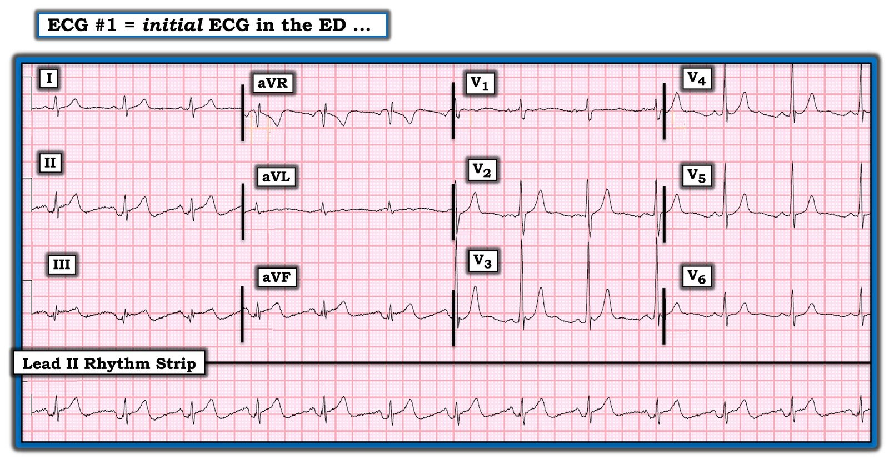
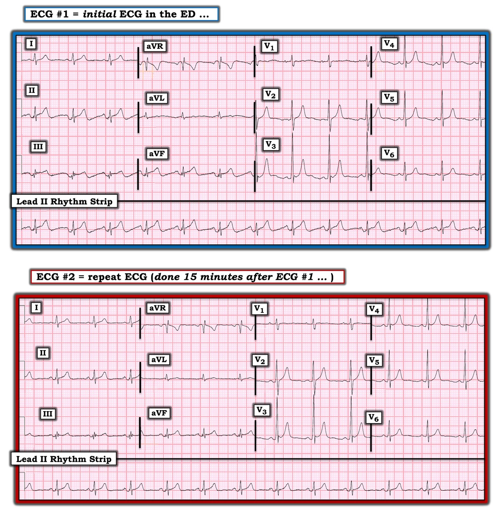
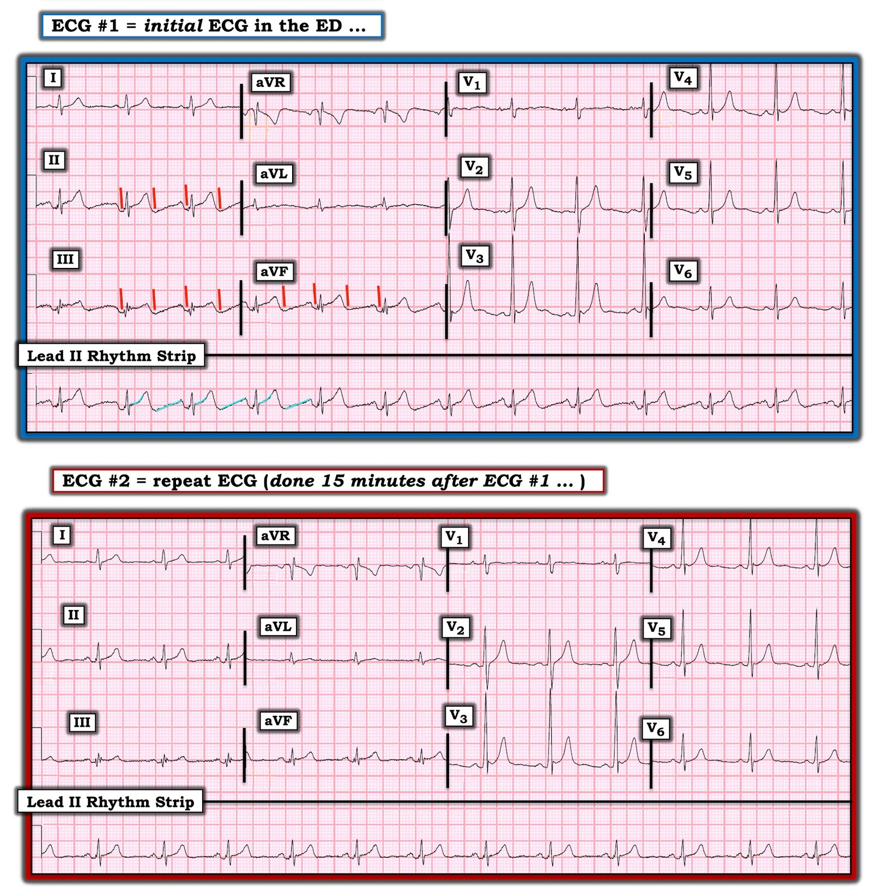

10/11/2020 — Một người đàn ông 30 mấy tuổi đau ngực và điện tâm đồ này
Bản dịch tiếng Việt của bài "A 30-something Man with Chest Pain and this ECG" – Dr. Smith’s ECG Blog. Giữ nguyên toàn bộ 4 hình ảnh của bản gốc.
===================================
BÌNH LUẬN CỦA TÔI, bởi KEN GRAUER, MD (10/11/2020):
===================================
Một người đàn ông 30 mấy tuổi đến khám trong tình trạng đau đớn dữ dội, tay ôm ngực. Anh ấy nghĩ cơn đau là do trào ngược thực quản. Điện tâm đồ ban đầu của bệnh nhân tại khoa cấp cứu (ED) được trình bày ở Hình 1.
- Nhịp là nhịp xoang. Có vẻ có ST chênh lên ở tất cả các chuyển đạo thành dưới. (Kết quả đọc bằng máy tính ghi: “ST chênh lên rõ; Cân nhắc tổn thương thành dưới” … ).
- CÂU HỎI: BẠN có kích hoạt phòng thông tim (cath lab) không?


Hình 1: Điện tâm đồ ban đầu của ca này (Xem bài).
Dr. Smith: Tôi khám bệnh nhân này khi anh ấy vừa đến khu phân loại (triage), chỉ định ghi điện tâm đồ — và xếp bệnh nhân vào một phòng. Sau đó tôi quay lại khu phân loại. Một đồng nghiệp của tôi có mặt trong phòng khi điện tâm đồ được ghi — và anh ấy lập tức lo ngại về khả năng OMI thành dưới. Anh ấy hỏi ý kiến tôi:
- Suy nghĩ của Dr. Smith: “Trông thế này không ổn chút nào. Tôi không nghĩ đây là OMI. Hình dạng rất lạ — và không có ST chênh xuống soi gương ở chuyển đạo aVL. Đây là một loại nhiễu nào đó — nhưng tôi không biết là loại gì. Tôi sẽ chỉ định ghi các điện tâm đồ liên tiếp và loại trừ bằng troponin.”
Ca bệnh tiếp diễn:
Vì tin chắc rằng điện tâm đồ #1 không thể hiện OMI mà hẳn phải là một loại nhiễu nào đó — Dr. Smith đã ghi lại điện tâm đồ 15 phút sau (Hình 2). Ông gửi cả hai bản ghi trong Hình 2 cho tôi.
- ĐIỀU GÌ đã xảy ra trong 15 phút kể từ khi ghi điện tâm đồ #1?


Hình 2: Cả hai điện tâm đồ trong ca này. Để dễ theo dõi — tôi đặt điện tâm đồ ghi lại (ghi 15 phút sau điện tâm đồ #1) bên dưới bản ghi ban đầu (Xem bài).
Đánh giá của Ken Grauer về điện tâm đồ #1: Như đã nêu ở trên — nhịp ở điện tâm đồ #1 là nhịp xoang, ở đây với tần số ~75-80 lần/phút. Các khoảng PR, QRS và QTc bình thường. Trục mặt phẳng trán bình thường, khoảng +40 độ. Không có lớn buồng tim. Về Thay đổi Q–R–S–T:
- Ngoài một sóng Q nhỏ và hẹp ở chuyển đạo aVL — không thấy sóng Q nào. Dù vậy — có một mức độ khía ( = phân mảnh) đáng ngạc nhiên ở phức bộ QRS trong từng chuyển đạo thành dưới, nhất là khi xét đến tuổi còn trẻ của bệnh nhân này.
- Tăng tiến sóng R — đáng chú ý với R=S ở chuyển đạo V1, tương ứng với các sóng R cao bắt đầu sớm ngay từ chuyển đạo V2. Sóng R đạt 24 mm ở chuyển đạo V3 — điều này là bất thường.
Về Thay đổi sóng ST-T:
- Như đã nêu — có vẻ có ST chênh lên ở từng chuyển đạo thành dưới. Không có ST chênh xuống soi gương ở chuyển đạo aVL lẫn chuyển đạo I.
- Ở các chuyển đạo ngực — sóng T trông hơi nhọn ở V2 đến V5, dù chúng không có vẻ cao bất tương xứng so với biên độ sóng R khá lớn ở các chuyển đạo tương ứng. Đoạn ST-T ở chuyển đạo V1 dẹt. Có các sóng U nhỏ ở V2 đến V6. Cuối cùng — sóng S tồn tại suốt các chuyển đạo trước tim.
Đánh giá điện tâm đồ #2 và nhận định tổng thể của chúng tôi:
Điện tâm đồ ghi lại mà Dr. Smith chỉ định là bản ghi phía dưới trong Hình 2. ST chênh lên từng gây lo ngại ở điện tâm đồ #1 nay đã mất. Ngoài việc dạng sóng nhiễu ở các chuyển đạo thành dưới đã hết — không có thay đổi đáng kể nào giữa điện tâm đồ #1 và điện tâm đồ #2.
- Khi Dr. Smith lần đầu thấy điện tâm đồ #1 — ông nghĩ: “Trông thật kỳ lạ. Tôi không biết điều gì gây ra ST chênh lên ở các chuyển đạo thành dưới — nhưng đây hẳn phải là nhiễu.”
- Tôi đồng ý. Tôi đã gửi cả hai bản ghi trên cho 2 đồng nghiệp chuyên gia của chúng tôi, những người có chuyên môn đặc biệt về các khía cạnh kỹ thuật của việc đọc điện tâm đồ. (Tôi đoán cả David Richley và Christopher Watford đều là những cái tên quen thuộc với độc giả thường xuyên của Dr. Smith’s ECG Blog, cũng như với độc giả của các diễn đàn điện tâm đồ khác trên internet).
David Richley cho biết như sau:
Tôi thấy bản ghi này rất thú vị nhưng rốt cuộc, tôi e rằng, không thể lý giải được. Nhiễu dường như chỉ ảnh hưởng đến các chuyển đạo II, III và aVF — nói cách khác, nó có vẻ liên quan đến điểm nối điện cực chân trái. Vấn đề, dù là gì đi nữa — có vẻ biểu hiện chủ yếu dưới dạng đoạn TP dốc lên, ST chênh lên nhẹ, và nhánh xuống của sóng T lõm xuống dưới mức đường nền, tạo ra sóng T hai pha.
- Dave nói tiếp — Tôi không nghĩ đây là vấn đề về mức lọc thông cao — vì vấn đề đó thường do dải nhịp được kích hoạt bằng tay, khi việc ghi theo thời gian thực ngăn không cho hệ thống lọc 2 chiều hoạt động, mà hệ thống này vốn được thiết kế để ngăn biến dạng tần số thấp. Bản ghi này có vẻ là bản ghi 12 chuyển đạo hoàn toàn tự động, nên kiểu biến dạng này lẽ ra không xảy ra. Tuy nhiên, nếu bản ghi được thu bằng cách chuyển thủ công giữa các nhóm chuyển đạo mỗi 2,5 giây, và giới hạn tần số dưới được đặt ở 0,5 Hz — thì điều đó có thể giải thích được.
- Một khả năng khác là vấn đề liên kết cơ-điện (electromechanical association), trong đó một điện cực chi được đặt trên một động mạch đang đập. Thường thì điện tâm đồ trông kỳ quái hơn nhiều so với những gì chúng ta thấy ở đây — nhưng tôi tự hỏi liệu đây có thể là một ví dụ nhẹ của hiện tượng đó. Khả năng cuối cùng có thể là trục trặc kỹ thuật của máy điện tâm đồ. Xin lỗi Ken vì tôi không thể giúp được nhiều hơn …
Christopher Watford cho biết như sau:
Một điện tâm đồ thật thú vị! Với tôi, đây trông như một trường hợp nhiễu đơn độc. Tôi đồng ý rằng điện cực chân trái là nguồn gốc — và khi tôi chồng 2 dải lên nhau, thậm chí có vẻ điều này còn ảnh hưởng đến cách máy theo dõi tính cực trung tâm Wilson cho các chuyển đạo V.
- Về nhịp đập của tim — điện tâm đồ này chắc chắn biểu hiện những gợn sóng đều đặn mà ta thấy khi một điểm mạch đập làm điện cực dịch chuyển — nhưng là động mạch nào? Không mấy khi tôi thấy mạch nảy mạnh ở chân hay cổ chân. Nếu điều này là do tiếp xúc với một động mạch đang đập — tôi sẽ kỳ vọng các gợn sóng nằm gần sóng T hơn một chút so với sóng P. Có lẽ với thể trạng và vị trí đặt điện cực phù hợp — có thể thấy kiểu chuyển động này. Nhưng đó không phải kiểu tôi từng thấy trước đây. Mặt khác, cũng có thể bệnh nhân đã đặt một cánh tay lên chính dây cáp, và có lẽ mạch quay đập vào dây cáp LL …
- Christopher nói tiếp — Với cài đặt bộ lọc như vậy, một ít tạp âm (noise) có thể gây ra nhiễu ‘dội vang’ (ringing) — nhưng tôi không nhớ đã từng thấy điều này trên điện tâm đồ. Đây đúng hơn là điều có thể gặp với một số loại bộ lọc nhất định (ví dụ bộ lọc chặn dải (notch filter)). Dù vậy — tôi không chắc bộ lọc chặn dải 60Hz lại tạo ra nhiễu tần số thấp như thế. Nói chung, một phát hiện thú vị! Nếu bệnh nhân có nhịp nhanh ở bản ghi đầu tiên — hẳn người ta sẽ tự hỏi liệu có ai gọi đây là cuồng nhĩ không?
TÓM TẮT: Cả 4 người chúng tôi — đều nhận ra rằng hình ảnh ST chênh lên ở điện tâm đồ #1 là một hình ảnh “giả nhồi máu” do một loại nhiễu nào đó — dù không ai trong chúng tôi có lời giải thích thỏa đáng cho nguyên nhân gây ra nhiễu này.
Một vài suy nghĩ bổ sung của tôi …
Cách TỐT NHẤT để xác nhận nhiễu — là xác định các thành phần thiết yếu của bản ghi nền mà không bị ảnh hưởng bởi thứ bạn nghi là nhiễu chồng lên.
- Hữu ích không kém là NHÌN vào bệnh nhân trong khi đang ghi điện tâm đồ nghi có nhiễu. Quan sát thấy bệnh nhân bị run, rùng mình do ớn lạnh, gãi, ho, hoặc làm một hoạt động bất ngờ nào khác thường sẽ giúp chẩn đoán (nhất là nếu điện tâm đồ ghi lại sau khi ngừng hoạt động đó cho ra bản ghi bình thường).
- Đáng tiếc — bệnh nhân trong ca hôm nay không được quan sát khi ghi điện tâm đồ #1.
- Vì vậy, tôi quyết định LÙI LẠI — và NHÌN thêm một lần nữa vào bản ghi ban đầu. Tôi đã ghi chú những suy nghĩ của mình từ lần nhìn thứ 2 vào điện tâm đồ #1 trong Hình 3:


Hình 3: Tôi đã ghi chú những suy nghĩ của mình về nhiễu trong điện tâm đồ #1 (Xem bài).
SUY NGHĨ CỦA TÔI về nhiễu trong Hình 3:
Như David Richley đã nêu ở trên — nhiễu dường như chỉ ảnh hưởng đến các chuyển đạo II, III và aVF. Điều này khu trú chi “thủ phạm” vào điểm nối chân trái.
- Trong bình luận của tôi, ở cuối trang của bài ngày 27 tháng Chín năm 2019 trên Dr. Smith’s ECG Blog — tôi đã đính kèm bài báo 3 trang của Rowlands & Moore, đây là mô tả TỐT NHẤT mà tôi từng thấy về cách nhanh chóng xác định chi NÀO là nguồn gây nhiễu. Toàn bộ phần bàn luận về lập luận tôi sử dụng trong 2 gạch đầu dòng tiếp theo dưới đây có trong bài báo này của Rowlands & Moore.
- Cách nhanh để xác định chi “thủ phạm” — là xem LIỆU nhiễu có tối đa ở 2 trong 3 chuyển đạo chi và vắng mặt ở chuyển đạo chi còn lại hay không. Ở điện tâm đồ #1 — ta thấy biên độ nhiễu bằng nhau ở chuyển đạo chi II và III — và hầu như không có gì ở chuyển đạo I. Điều này gợi ý chân trái là chi “thủ phạm” — vì theo tam giác Einthoven, điện cực LL này tham gia như nhau vào việc tạo ra (về mặt điện học) chuyển đạo II và III. Lý do chuyển đạo I không có nhiễu — là điện cực LL không được dùng để tạo ra chuyển đạo đó.
- Việc chân trái đúng là chi “thủ phạm” — được khẳng định khi nhận thấy sóng lệch do nhiễu ở 3 chuyển đạo tăng thế rõ nhất ở chuyển đạo aVF (chuyển đạo được đặt trên điện cực LL).
LÙI LẠI để nhìn điện tâm đồ #1 trong Hình 3 từ một khoảng cách ngắn:
- Tôi thấy thực ra có 2 “vết lõm” âm nhỏ, tròn, trông giống nhau, cách đều nhau trong mỗi khoảng R-R ở từng chuyển đạo trong 3 chuyển đạo thành dưới (các đường ĐỎ chéo trong điện tâm đồ #1). Những “vết lõm âm” này không thấy ở nơi khác. Một lần nữa mượn lời của Dr. Smith — trông thế này thật kỳ lạ. Sóng T hai pha không có thành phần âm tận rộng như vậy — và đoạn PR chênh xuống nói chung không được kỳ vọng tạo ra kiểu thành phần âm, tròn mà ta thấy ở từng chuyển đạo thành dưới.
- Ở dải nhịp — tôi đã tô lại bằng màu XANH nhạt dạng sóng điện tâm đồ của vài nhát ở chuyển đạo II dài. Đường thẳng dốc lên màu XANH nhạt kéo dài từ “vết lõm” âm của sóng T cho đến đỉnh sóng P kế tiếp trông không hề thật. Như Christopher Watford đã nói (anh cho rằng một số người quan sát có thể nhầm thành cuồng nhĩ chậm) — đoạn dốc lên thẳng ban đầu của đoạn ST (mà tôi đã tô lại bằng màu XANH nhạt ở vài nhát) — gần như cách đều và song song với đường thẳng dốc lên từ “vết lõm” âm của sóng T đến đỉnh sóng P kế tiếp.
- ĐIỀU CỐT LÕI: Lùi lại một chút — hình ảnh điện tâm đồ ở 3 chuyển đạo thành dưới của điện tâm đồ #1 trông không thật. Ủng hộ cho kết luận này (tức là ST chênh lên ở các chuyển đạo thành dưới trong điện tâm đồ #1 là không thật) là các điểm sau: i) Không có bất kỳ ST chênh xuống soi gương nào ở chuyển đạo aVL (chuyển đạo hầu như luôn có thay đổi soi gương khi có OMI thành dưới); và, ii) Toàn bộ nhiễu biến mất hoàn toàn khi ghi điện tâm đồ #2 15 phút sau đó.
SUY NGHĨ CUỐI CÙNG: Chúng ta cần quay lại lý do đến khám ban đầu — người đàn ông trẻ này đến khoa cấp cứu trong tình trạng đau đớn dữ dội (tay ôm ngực) vì nghi trào ngược thực quản.
- Điện tâm đồ #2 xác nhận không có ST chênh lên ở các chuyển đạo thành dưới. Sóng T nhọn ở các chuyển đạo ngực trông giống một biến thể tái cực. Vì vậy, không có thay đổi cấp tính nào trên điện tâm đồ ở cả hai bản ghi này!
- Dù vậy — điện tâm đồ #2 vẫn bất thường đối với một người đàn ông trẻ được cho là khỏe mạnh, vì: i) Có mức độ khía (phân mảnh) đáng ngạc nhiên ở từng chuyển đạo thành dưới; ii) Dấu hiệu sóng R = sóng S ở chuyển đạo V1 là không bình thường; và, iii) Biên độ sóng R lớn đáng ngạc nhiên ở các chuyển đạo trước tim đầu tiên. Do đó — tôi sẽ cân nhắc siêu âm tim cho người đàn ông trẻ này để loại trừ bệnh tim cấu trúc tiềm ẩn (có lẽ có vai trò trong các triệu chứng khiến anh ấy đến khám).
ĐIỂM CẦN HỌC: Nếu một số dạng sóng lặp lại trên điện tâm đồ trông giống nhiễu — thì rất có khả năng những dạng sóng lặp lại trông bất thường này đúng là nhiễu. Ghi lại điện tâm đồ (như Dr. Smith đã chỉ định) — đã xóa tan mọi nghi ngờ trong ca này.
================
- LƯU Ý #1: Xin chân thành CẢM ƠN Christopher Watford & David Richley vì những đóng góp của họ cho ca này.
- LƯU Ý #2: Để luyện tập thêm việc phát hiện nhiễu — Xin XEM bài ngày 17 tháng Mười năm 2020 của chúng tôi trên Dr. Smith’s ECG Blog.
- LƯU Ý gửi độc giả: Nếu ai có thêm hiểu biết về nguyên nhân có thể gây ra nhiễu trong ca này — Xin hãy VIẾT CHO CHÚNG TÔI!
================